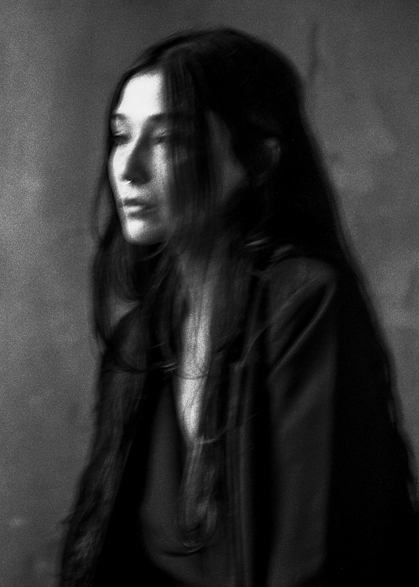
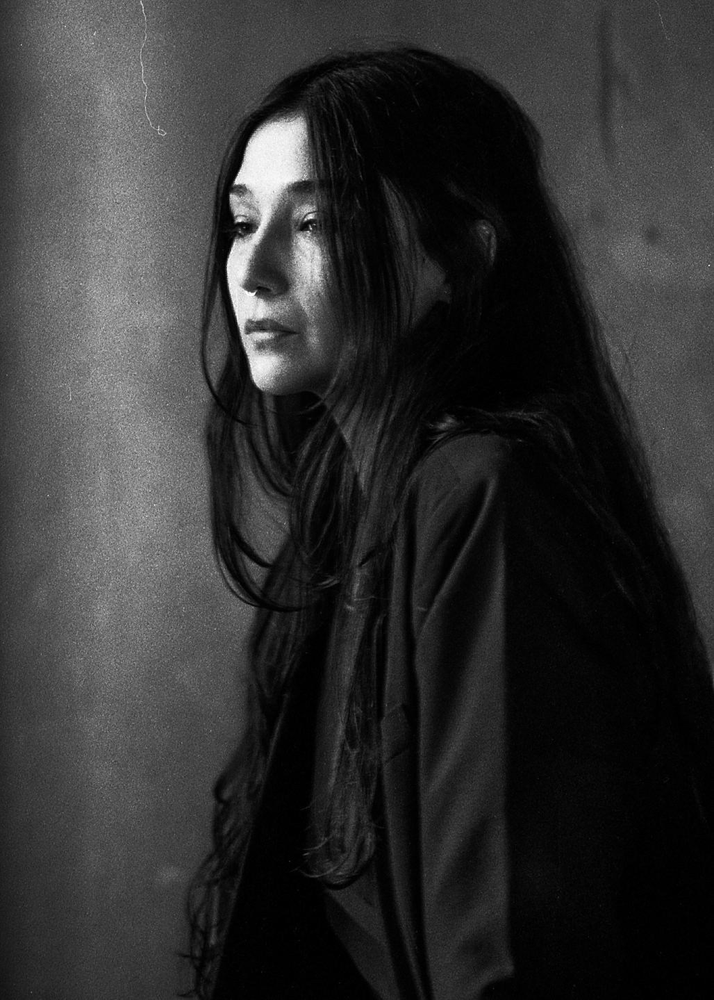

Julia Witas
works across sound, image, and performance, exploring the affective and transformative dimensions of memory, grief, nature, intimacy, and dreams. Witas follows an experimental approach to music, combining voice and songwriting with multi-instrumental soundscapes, drone, field recordings, sculptural breath and extended vocal techniques. Moving between consuming distortion and poetic fragility, her work carries an introspective yet visceral intensity.
Witas has presented work internationally in solo and collaborative formats across a diverse range of spaces, including Volksbühne (Berlin, DE), Halle am Berghain (Berlin, DE), MS Stubnitz (Hamburg, DE), Astra (Berlin, DE), Stadtwerkstatt (Linz, AT), Das Lot (Vienna, AT) and Lost Angeles (Los Angeles, US).
*1994, Havre de Grace, Maryland
based in Berlin, Germany
2021—2025 M.A. Time-based Media
University of Arts Linz
2014—2019 B.A. Communication Design
FHWS, University of Applied
Sciences Würzburg-Schweinfurt